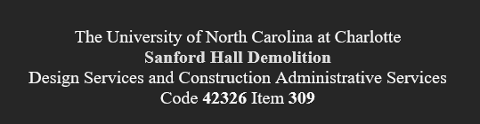

Introduction Summary
Robert C. | "Robbie" | Williams

Mascot: Remorseless Wobbegong
Personal Statement: I am a junior enrolled at the University of North Carolina at Charlotte. My current academic endeavor is a Bachelors of Science in Computer Science with a concentration in Cyber Security.
Background Details
- Personal: I am 20 and from Kitty Hawk NC.
- Professional: I have worked seasonally as a medical clerk for 5 years.
- Academic: I am a graduate of First Flight Highschool and an enrolled junior at UNCC.
- Subject Background: Some amount of education in frontend in Highschool.
- Primary Platform: Dell Laptop Windows 11.
- Funny Thing: I enjoy tactical RTS games for over 1500 hours.
- Other: I love marine biology, especially sharks.
Courses Currently Taking:
- ITSC-2181: Intro to Computer Systems
- Reason: Core requirement for CS.
- ITIS-3135: Front-End Web App Development
- Reason: Interest in web development.
- ITIS-3200: Intro to Info Security and Privacy
- Reason: Focus for my concentration.
- ITSC-3155: Software Engineering
- Reason: Essential for software development career.
- STAT-2122: Intro to Probability and Statistics
- Reason: Math requirement.
Quote: "If your opponent is of choleric temper, seek to irritate him. Pretend to be weak, that he may grow arrogant." - Sun Tzu